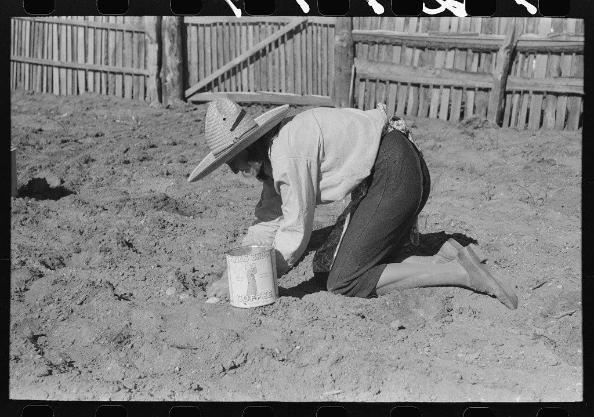

Disclosure: some links on this site are affiliate links. As an Amazon Associate I earn from qualifying purchases, at no extra cost to you.
Row Covers for Winter Greens
Kale, spinach, collards and lettuce can keep producing well into winter if you give them a little shelter. A floating row cover over simple hoops traps the ground's warmth at night and blocks drying wind. These are the basics for beginners.

Mrs. Caudill setting out cabbage plants in her garden, Pie Town, New Mexico · Photo: Library of Congress (no known restrictions)